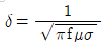
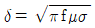
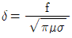
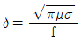
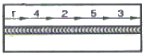
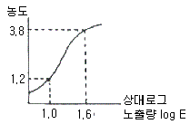

방사선비파괴검사산업기사 (2018-09-15 기출문제)
1과목: 비파괴검사 개론
1. X선 제어장치의 3가지 주요 기능이 아닌 것은?
- 관전류의 조절
- 전자의 충격 조절
- 관전압의 조절
- 노출시간의 조절
(정답률: 95%)

2. 여과입자법(Filtered Particle Test)의 설명으로 틀린 것은?
- 검사 후 소립자의 제거가 쉽다.
- 반드시 형광법으로 검사를 하여야 한다.
- 콘크리트, 내화물, 석물(돌) 등 다공성재료에 적용한다.
- 무색의 액체에 색이 있는 소립자나 형광입자를 현탁하여서 사용한다.
(정답률: 60%)
3. 비파괴검사의 이용 목적과 가장 관계가 먼 것은?
- 건전성의 확보
- 제조기술의 개량
- 신뢰성의 향상
- 측정기술의 보안
(정답률: 64%)
4. 와전류의 표준침투 깊이(δ)를 바르게 나타낸 식은? (단, σ은 전도율(μ/m), μ는 투자율(H/m), f는 시험주파수(Hz)이다.)




(정답률: 78%)
5. 여러 종류의 비파괴검사를 적용한 설명으로 옳은 것은?
- 초음파탐상시험은 용접부의 블로홀 검출에 적용할 수 있다.
- 자분탐상시험은 알루미늄이나 동관의 접착불량 부분의 검출에 잘 이용된다.
- 침투탐상시험은 용접부의 비파괴검사에 적용되지 않는다.
- 와전류탐상시험은 세라믹관 내외면의 결함검출에 적합한 시험방법이다.
(정답률: 79%)
6. 다음 중 탄소 함유량이 가장 많은 것은?
- 순수철
- 암코철
- 공석강
- 공정주철
(정답률: 78%)
7. 수소저장합금에 대한 설명으로 틀린 것은?
- 수소가스와 반응하여 금속수소화물이 된다.
- 소소의 흡장ㆍ방출을 되풀이하는 재료는 분화하게 된다.
- 합금이 수소를 흡장할 때는 팽창하고, 방출 할 때는 수축한다.
- 수소가 방출되면 금속수소화물은 원래의 수소저장 합금으로 되돌아가지 않는다.
(정답률: 69%)
8. 70~90%Ni, 10~30%Fe를 함유한 합금으로 투자율이 높고, 약한 자기장 내에서의 초투자율도 높은 것은?
- 인바
- 엘린바
- 퍼멀로이
- 플래티나이트
(정답률: 56%)
9. 주석계 화이트 메탈로 안티몬 및 구리의 함유량이 많아짐에 따라 경도, 인장강도 등이 우수한 베어링 합금은?
- 켈멧(kelmet)
- 자마크(zamak)
- 베빗(babit) 메탈
- 오일리스(oiliness) 베어링
(정답률: 79%)
10. 재결정온도 이상에서 하는 가공은?
- 저온가공
- 냉간가공
- 열간가공
- 상온가공
(정답률: 91%)
11. 전열합금에 요구되는 특성으로 틀린 것은?
- 전기저항이 높고 저항의 온도계수가 작을 것
- 고온에서 조직이 불안정하고 열팽창계수가 클 것
- 고온대기 중에서 산화에 견디고, 사용온도가 높을 것
- 화학적으로 안정하고 각종 노내분위기, 내화물 등에 침식되지 않을 것
(정답률: 89%)
12. 금속 중에 0.01~0.1μm 정도의 미립자를 수 % 정도 분산시켜, 고온에서의 탄성률, 강도 및 크리프 특성을 개선한 재료는?
- DP
- FRM
- PSM
- HSLA
(정답률: 70%)
13. 주철의 흑연화를 돕고 탄화물의 생성을 저지하여 칠 방치에 효과적인 원소로서, 주철의 기지에 모든 비율로 고용하는 것은?
- Cr
- Ni
- Mo
- V
(정답률: 73%)
14. 다음 원소 중 비중이 가장 큰 것은?
- Fe
- Al
- Cu
- Ir
(정답률: 67%)
15. 아공석강까지의 기계적 성질에 대한 설명으로 옳은 것은?
- 탄소량의 증가에 따라 충격값은 증가한다.
- 탄소량의 증가에 따라 인장강도, 항복점은 감소한다.
- 탄소량의 증가에 따라 경도는 증가한다.
- 탄소량의 증가에 따라 단면수축률, 연신율은 증가한다.
(정답률: 61%)
16. 잔류응력에 대한 설명으로 옳은 것은?
- 제거를 위하여 용접 후 열처리가 필요하다.
- 심각한 결함이 아니므로 잔류응력이 커도 품질에는 영향이 없다.
- 국부적으로 일어나지 않으며 응력 부식에 영향이 없다.
- 저온에서 사용하는 구조물에서는 아무런 영향이 없다.
(정답률: 87%)
17. 본 용접에서 다음 그림과 같은 용착법은?

- 대칭법
- 후퇴법
- 스킵법
- 전진법
(정답률: 82%)
18. 일반적인 서브머지드 아크 용접의 특징으로 틀린 것은?
- 용입이 깊다.
- 용융속도와 용착속도가 빠르다.
- 개선가공에 높은 정밀도를 요한다.
- 장비의 가격이 저가이고, 설치비가 저렴하다.
(정답률: 62%)
19. 용접봉의 종류 중 내균열성이 가장 좋은 것은?
- 저수소계
- 고산화티탄계
- 고셀룰로오스계
- 라임티타니아계
(정답률: 73%)
20. 피복 아크 용접에서 용접전류가 300A, 아크전압이 25V, 용접속도가 15cm/min이라면 단위 길이 1cm당 발생하는 용접 입열은 몇 J/cm인가?
- 10800
- 18000
- 20000
- 30000
(정답률: 40%)
2과목: 방사선투과검사 원리 및 규격
21. X선 튜브와 시험체 사이에 놓여진 필터는 언더컷을 발생시킬 수 있는 산란방사선을 감소시킨다. 이것는 어떤 작용에 의한 것인가?
- 후방산란선을 흡수한다.
- 방사선의 강도를 줄인다.
- 1차 방사선의 긴 파장을 흡수한다.
- 1차 방사선의 짧은 파장을 흡수한다.
(정답률: 78%)
22. Co-60 점선원으로부터 10m 거리에 있는 작업종사자가 받는 피폭선량이 640mR/h이었다. 작업종사자의 피폭선량을 20mR/h이하로 하려면 납 차폐벽의 두께를 약 몇 mm로 하여야 하는가? (단, 납의 흡수계수는 0.0693mm-1이다.)
- 10mm
- 20mm
- 50mm
- 80mm
(정답률: 58%)
23. 1[esu]는 몇 쿨롱(Coulomb) 인가?
- 3×109
- 3.3×10-10
- 3×10-9
- 3.3×1010
(정답률: 62%)
24. X선판 타켓(target)으로부터 발생되는 X선 강도의 분포는?
- 0°에서 가장 강하다.
- 양극쪽이 음극쪽보다 강하다.
- 음극쪽이 양극쪽보다 강하다.
- 각도에 관계없이 일정하다.
(정답률: 75%)
25. 전리방사선의 검출과 측정에 사용되는 측정기들 중에서 다른 것과 검출기의 형태가 다른 것은?
- 전리함계수기
- 비례계수기
- 신틸레이션 계수기
- 가이거-뮬러계수기
(정답률: 50%)
26. 비파괴검사에 사용하기 위해 Co-60은 무엇을 방출하는가?
- 알파선
- 열전자
- 감마선
- X선
(정답률: 95%)
27. 방사선투과시험 시 시험체의 명암도(contrast)에 영향을 주는 인자와 가장 거리가 먼 것은?
- 시험체의 배치
- 시험체의 밀도
- 시험체의 두께
- 방사선의 에너지
(정답률: 68%)
28. 일반적으로 방사선투과검사용 선원으로 사용되지 않는 동위원소는?
- Ra-226
- Co-60
- Ir-192
- Se-75
(정답률: 77%)
29. 금속결정의 구조 연구에서 X선 회절법을 이용하여 원자간의 거리 등을 측정하는데 nλ=2dㆍsinθ라는 공식을 이용한다. 이 공식과 관련하여 다음 중 관계있는 것은? (단, n:반사차수,, λ:파장, d:격자면 간격, θ:회절각이다.)
- Heel Effect
- 거리 역제곱 법칙
- Bragg 법칙
- Skin Effect
(정답률: 64%)
30. 다음의 X선 중에서 선스펙트럼을 갖는 것은?
- 백색 X선
- 연속 X선
- 제동 X선
- 특성 X선
(정답률: 60%)
31. 주강품의 방사선투과 시험방법(KS D 0227)에 의한 주강품 수축의 결함(슈링키지) 길이측정 시 시험부 호칭 두께에 관계없이 세지 않는 선모양 결함의 최대 치수는 얼마인가? (단, 1류에 한한다.)
- 3mm
- 5mm
- 7mm
- 9mm
(정답률: 60%)
32. 강 용접 이음부의 방사선 투과시험방법(KS B 0845)에서 모재 두께가 12mm인 평판 맞대기 용접 이음부를 촬영하는 경우에 사용하여야 하는 계조계는?
- 15형
- 20형
- 25형
- 30형
(정답률: 67%)
33. 보일러 및 압력용기에 대한 방사선투과검사(ASME Sec.V, Art2)에서 투과사진 상에 농도 변화가 어느 범위 이상이면 추가로 상질계를 배치하고 재촬영하여야 하는가?
- 지정된 농도보다 -15% 또는 30% 이상으로 변화한 경우
- 지정된 농도보다 -10% 또는 30% 이상으로 변화한 경우
- 지정된 농도보다 -5% 또는 25% 이상으로 변화한 경우
- 지정된 농도보다 -10% 또는 35% 이상으로 변화한 경우
(정답률: 53%)
34. 강용접 이음부의 방사선 투과시험방법(KS B 0845)에 의한 동일한 시험시야 내에서 투과사진에 지름 5mm인 제1종 결함이 2개 있을 때 결함 점수는 얼마인가?
- 6
- 10
- 20
- 30
(정답률: 48%)
35. 다음 중 방사선에 노출되었을 때 피폭되는 양을 관리하기 위한 피폭선량의 단위로 옳은 것은?
- R(레트젠)
- Gy(그레이)
- Sv(시버트)
- Bq(베크렐)
(정답률: 80%)
36. 금속 주조품의 방사선투과시험을 위한 표준방사선투과검사(ASME Sec.V, Art.22 SE-1030)에서 투과도계를 하나만 사용해도 되는 농도 범위는 얼마인가?
- 투과도계 위치의 -15% 혹은 +15%
- 투과도계 위치의 -15% 혹은 +30%
- 투과도계 위치의 -30% 혹은 +15%
- 투과도계 위치의 -30% 혹은 +30%
(정답률: 73%)
37. 원자력안전법에서 적용하고 있는 일반주민의 연간 법정선량한도의 기준은?
- ImSv
- 2mSv
- 10mSv
- 20mSv
(정답률: 86%)
38. 방사선작업자에게 적용되는 유효선량 한도는?
- 연간 12밀리시버트
- 연간 10밀리시버트를 넘지 아니하는 범위에서 5년간 200밀리시버트
- 연간 50밀리시버트를 넘지 아니하는 범위에서 5년간 100밀리시버트
- 연간 15밀리시버트를 넘지 아니하는 범위에서 5년간 200밀리시버트
(정답률: 87%)
39. 공간선량측정기 서베이미터의 일반적인 교정주기는?
- 1개월
- 3개월
- 6개월
- 9개월
(정답률: 95%)
40. 방사선관리구역은 외부방사선량률이 주당 400μSv 이상인 곳이다. 만약 주당 40시간씩 작업한다면 외부 방사선량률(mSv/h)은?
- 0.01
- 0.1
- 1.0
- 10
(정답률: 52%)
3과목: 방사선투과검사 시험
41. 알루미늄 용접부에서 생성되는 결함이 아닌 것은?
- 산화물 개입
- 언더컷
- 기공
- 모래물림
(정답률: 86%)
42. 강판의 맞대기 용접부를 방사선투과검사 시 유효길이의 바깥쪽일수록 나타나는 현상으로 옳은 것은?
- 방사선의 투과두께가 커진다.
- 결함상이 명료해진다.
- 농도가 높아진다.
- 결함 식별도가 좋아진다.
(정답률: 58%)
43. 방사선투과검사는 선원, 시험체 및 필름의 배치에 의해 가장 실물에 가까운 상을 얻도록 해야 한다. 이러한 조건에 관한 설명으로 틀린 것은?
- ㅏ 시험체와 필름은 평행하게 해야 한다.
- 선원의 크기는 가능한 커야 한다.
- 시험체와 필름은 가능한 한 밀착시켜야 한다.
- 선원은 가능한 한 시험체로부터 멀리 떨어져야 한다.
(정답률: 86%)
44. 용접부의 투과사진 농도에서 최고 농도는 어느 부위를 측정하는가?
- 중앙 모재부의 농도
- 중앙 용접부의 농도
- 필름 끝단부의 농도
- 가장 진한 결함의 농도
(정답률: 60%)
45. 그림의 필름특성곡선에서 평균 필름콘트라스트를 구하면?

- 0.82
- 1.63
- 4.33
- 10.35
(정답률: 53%)
46. X선관의 양극에 해당되는 것은?
- 표적
- 필라멘트
- 창(Window)
- 집속컵(Focusing Cup)
(정답률: 65%)
47. ASTM의 유공형 투과도계 180번에 관한 사항으로 틀린 것은?
- 투과도계의 두께가 0.18인치이다.
- 투과도계의 무양이 디스크형(disc)이다.
- 투과도계에 구멍이 3개(1T, 2T, 3T) 뚫려 있다.
- 2-2T 감도 기준이면 시험체 두께 9인치에 사용한다.
(정답률: 50%)
48. 방사선투과시험에서 특정 단면의 영상을 강조하고 다른 층의 영상을 흐리게 할 때 사용하는 기법은?
- 회절분석
- 단층촬영기법
- 중성자 투과검사법
- 고에너지 X선 투과검사법
(정답률: 90%)
49. 형상이 복잡한 주물품은 제품 자체에서 많은 산란방사선을 방출하는데 이 산란선을 감소시키시 위해 어떤 조치를 하는 것이 바람직한가?
- 조사시간을 감소시킨다.
- 콜리메터(collimator)를 사용한다.
- 다이아프램(diaphragm)을 사용한다.
- 납으로 된 마스크(mask)를 사용한다.
(정답률: 67%)
50. 특수 방사선 투과검사법의 입체방사선투과검사(Stereo radio-graphy)에 관한 설명으로 틀린 것은?
- 시험체를 확대하여 볼 수 있게 한다.
- 시험체의 결함 깊이를 측정하는 방법이다.
- 사람의 두 눈 간격만큼 떨어진 두 위치의 X선 초점에 으해 얻어진 두 개의 사진을 이용한다.
- 두 사진을 프리즘 또는 거울을 이용하여 각각의 눈이 단지 한쪽의 사진만을 볼 소 있게 한다.
(정답률: 47%)
51. 일반적으로 사용되는 콜리메터의 차폐능력은?
- 1/10가층
- 1/5가층
- 1/2가층
- 1가층
(정답률: 65%)
52. 150~300kV[ 정도의 V선 발생장치로 방사선 투과시험을 할 때 다음 물질 중에서 산란선을 제거하기위해 필름의 앞, 뒷면에 사용되는 것은?
- 납
- 종이
- 카드뮴
- 알루미늄
(정답률: 75%)
53. 두꺼운 시험체를 짧은 시간에 촬영하기 위한 방법으로 틀린 것은?
- 흡수계수가 커지게 하는 조치를 한다.
- 투과선량률을 그게 한다.
- 선원의 강도를 그게 한다.
- 에너지가 큰 감마선이 이용한다.
(정답률: 73%)
54. 필름배지의 단점에 관한 설명으로 틀린 것은?
- 잠상퇴행으로 피폭량이 감소된다.
- 방향의존성이 있다.
- 필름의 감도로 인하여 측정할 수 있는 범위가 제한된다.
- 기계적 압력 등으로 호림현상(fogging)이 발생할 수 있다.
(정답률: 48%)
55. 필름 콘트라스트에 영향을 미치는 인자가 이닌 것은?
- 필름의 종류
- 시험체의 재질
- 현상시간
- 현상액의 정도
(정답률: 70%)
56. 노출 안된 필름의 보관 방법으로 틀린 것은?
- 습기가 차단된 상태로 밀봉하여 보관한다.
- 서늘하고 건조한 곳에 보관한다.
- 필요한 정도만을 공급받아 본다.
- 판필름(sheet film,)을 통을 길이방향으로 수평되게 보관한다.
(정답률: 78%)
57. 2차 방사선이라 볼 수 없는 것은?
- 광전자(Photoelectron)
- 열전자(Thermoelectron)
- 반조 전자(Recloil electron)
- 산란 관자(Scattered electron)
(정답률: 48%)
58. 촬영용 필름의 적절한 현상을 위한 가지 가본용액은?
- 현상액, 정착액, 물
- 정지액, 초산액, 물
- 초산액, 정착액, 정지액
- 현상액, 정지액, 과산화수소액
(정답률: 100%)
59. 원자번호와 별개로 관계가 없이 특정 수소(H) 등 가벼운 물질에는 흡수가 아주 잘 되며 철(Fe) 등 중금속에는 흡수가 잘 안되는 특성으로 이용하여 두꺼운 금속제의 용기나 구조물 내부에 존재하는 가벼운 수소화합물의 검출에 사용되는 방사선 투과시험은?
- 제오 래디오그래피
- 중성자 래디오그래피
- 실시간 래디오그래피
- 스테레오 래디오그래피
(정답률: 69%)
60. 양질의 투과사진이 노출시간 10분, 관전류 5mA에서 얻어졌다면 다른 조건은 변화시키지 않고 과전류만 10mA로 높이면 같은 결과의 투과사진을 얻기 위한 노출시간은 얼마로 하면 되는가?
- 2분
- 4분
- 5분
- 10분
(정답률: 82%)